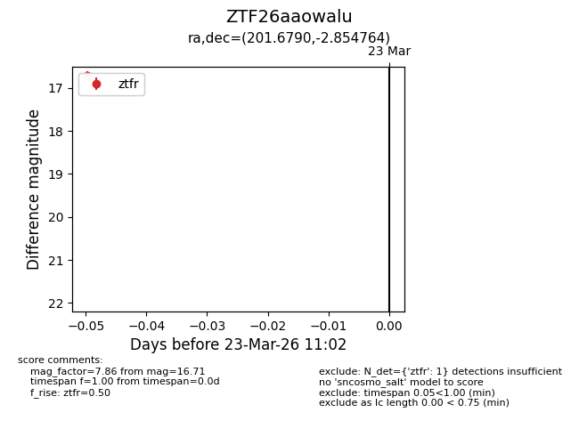
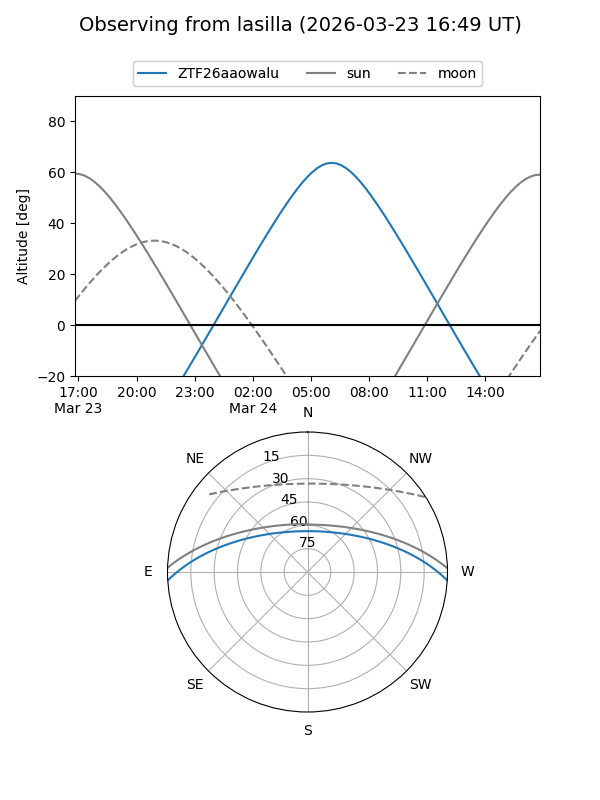
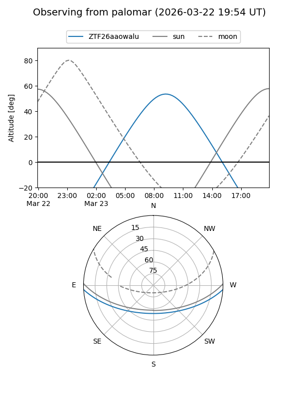

ZTF26aaowalu
Target ZTF26aaowalu at 2026-03-23 11:04
Aliases and brokers:
FINK: link
Lasair: link
ALeRCE: link
alt names
ZTF26aaowalu (ztf,fink_ztf)
Coordinates:
equatorial (ra, dec) = 201.6790,-2.85476
equatorial (HMS+DMS) = 13:26:42.95,-02:51:17.15
galactic (l, b) = (320.1427,+58.83314)
Flags:
Photometry:
last ztfr=16.71
1 ztfr detections
Lightcurve

Visibility


Additional plots